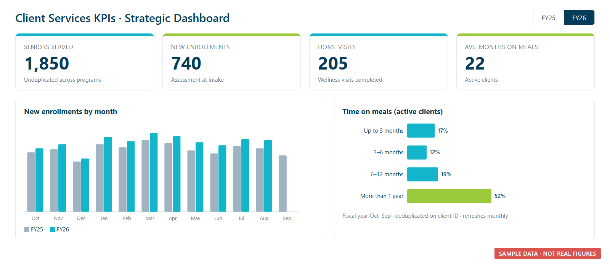

Client Services
KPI Model
I built an auditable Excel model and a Power BI report that answers leadership's most-asked question: "How many seniors do we actually serve?" It gives one number per question, calculated the same way every time.
- Excel
- Power BI
- DAX
- Power Query
- Python
This is a case study only. Figures in the text are rounded. The dashboard image uses made-up sample data, and no client information is shown.
The problem
Leadership needed strategic KPIs for the coming year: seniors served, new enrollments, home visits, and referrals. Later they added a monthly case management report with a city breakdown, time on meals, and the share of clients who are veterans or have pets.
The raw data made that harder than it sounds:
- The same senior can appear in both meal programs (home-delivered and congregate), so simply adding the programs together overcounts. Several hundred seniors are in both.
- The agency runs on an October–September fiscal year, not the calendar year.
- Some numbers describe a whole year (seniors served) and others are monthly (enrollments). Mix them up and a chart will quietly show the wrong thing.
What I built
- An 11-tab Excel model built from four cumulative system exports. Every count is deduplicated on the client ID and assigned to the correct fiscal year. The model has over 77,000 formulas and zero errors, and a method-notes tab defines every metric in plain English.
- One tidy fact table that feeds Power BI. It refreshes from OneDrive, so no gateway is needed.
- DAX measures that make double counting impossible. Each measure locks to its own metric, so nobody can build a visual that accidentally adds overlapping numbers together.
- Two Power BI report pages (monthly activity and client profile) with a synced fiscal-year slicer, plus a one-page PDF summary for the executive director.
- A written build guide covering the "looks like a bug but isn't" cases before a board member could ask about them. For example, referrals equal new enrollments by definition.
- A licensing recommendation that kept costs low and client data private. It explains why "Publish to web" should not be used for this report.

Client Services KPI dashboard layout (sample data)
Results
- Leadership now has one defensible "seniors served" number: nearly 3,000 unduplicated seniors a year, with a clear method behind it.
- The report surfaced long-term reliance on the program. Nearly two-thirds of active clients have been receiving meals for more than a year.
- It tracks how quickly new clients start meals, so leadership can see what share waited longer than a week.
- Next year needs no rebuild. Refresh the exports, update a few dates on the reference tab, and the model and report follow.
What I learned
- For board reporting, consistency and a clear definition beat a clever metric every time.
- Design the model so the wrong answer is hard to build, instead of relying on everyone remembering the rules.
- Write down the surprising-but-correct results in advance. It protects trust in the whole report.